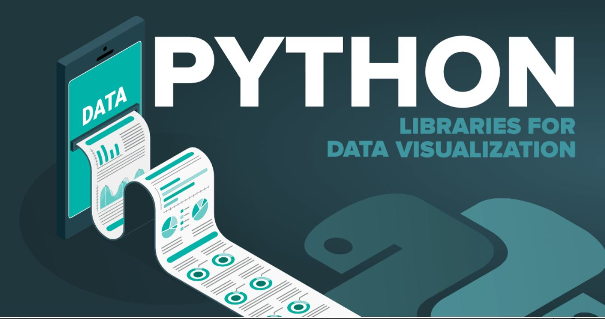

Python & Automation
A collection of automation tools, data scripts, and workflow solutions built with Python — focused on reducing manual effort, improving accuracy, and delivering reliable outputs in regulated environments.
A collection of automation tools, data scripts, and workflow solutions built with Python — focused on reducing manual effort, improving accuracy, and delivering reliable outputs in regulated environments.
Python scripts that generate formatted Excel reports automatically — eliminating repetitive manual builds. Reports include conditional formatting, summary tables, and charts, scheduled to run and deliver outputs without human intervention.

Automated reconciliation pipelines that compare datasets from multiple sources, flag discrepancies, and produce structured exception reports. Used in financial and environmental settlement workflows to ensure accuracy across high-volume data.
Python scripts integrated with Windows Task Scheduler to run jobs at set intervals — automating file moves, folder monitoring, email notifications, and report delivery. Turns manual daily tasks into reliable, unattended routines.
Scripts that automatically pull fresh data from APIs, databases, or shared drives and refresh connected Excel workbooks or Power BI datasets on a schedule — ensuring stakeholders always see up-to-date figures without manual intervention.
Python-driven SQL workflows that extract, transform, and validate data across relational databases. Includes automated data quality checks, row-count validation, and anomaly flagging — integrated into daily settlement and reconciliation processes.
Exploratory data analysis using Pandas, Matplotlib, and SciPy to investigate distributional patterns in real-world datasets. Applied descriptive statistics and probability modelling to draw data-backed conclusions and visualise key findings.